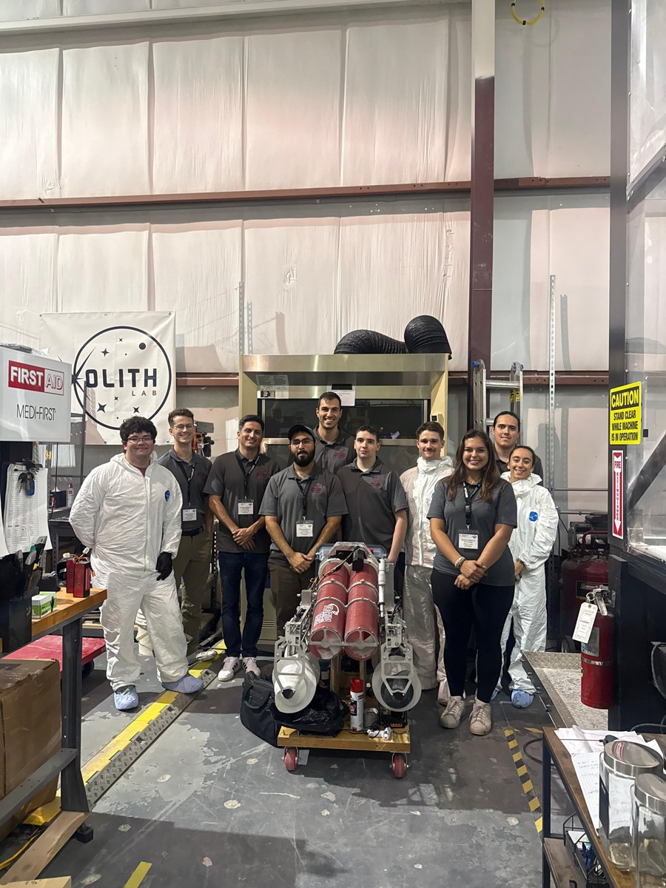
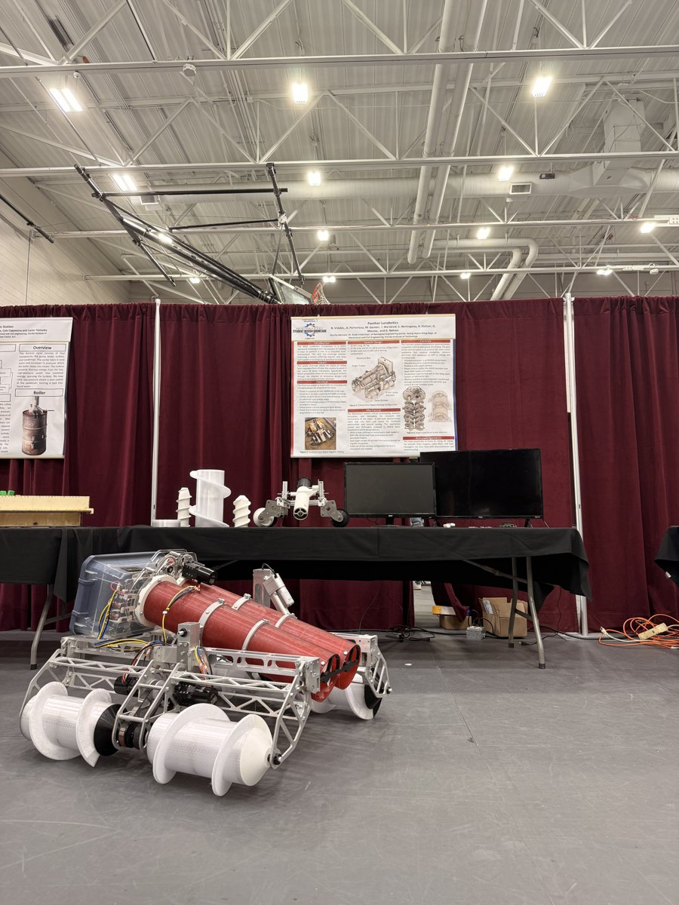
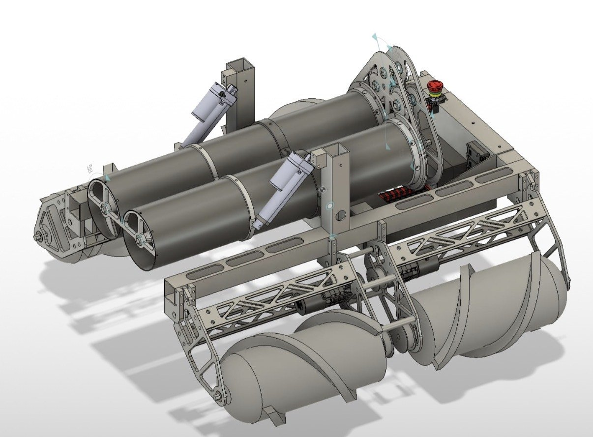
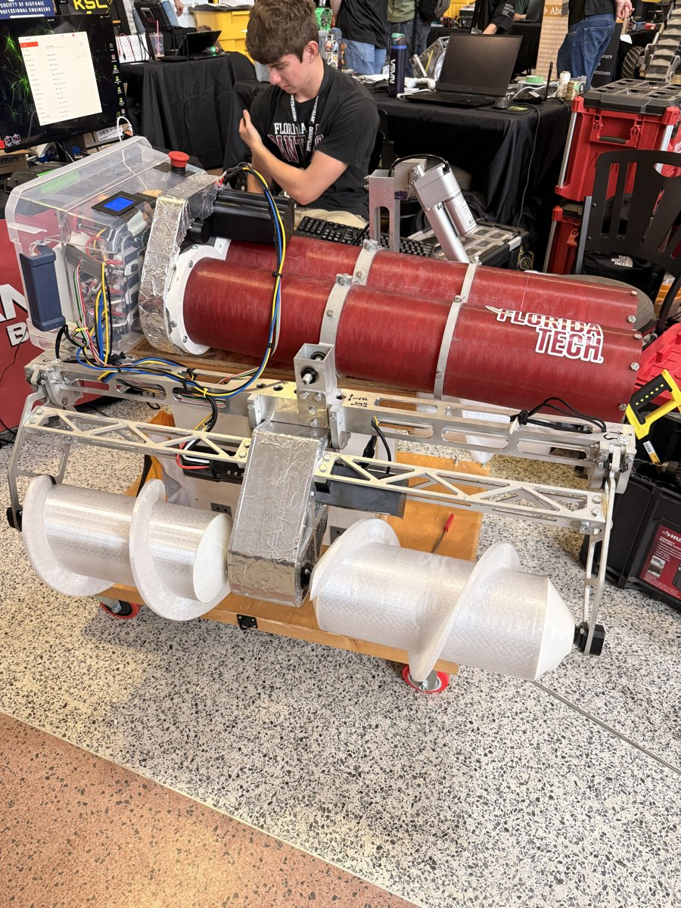
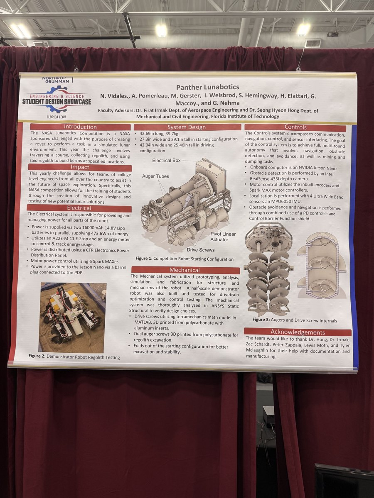
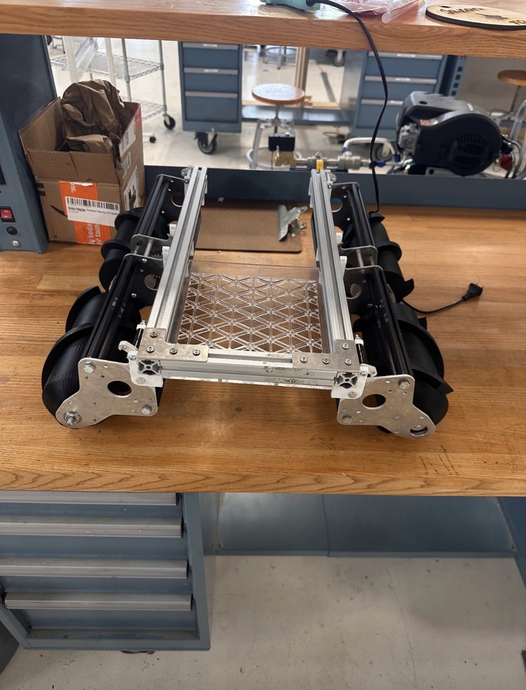
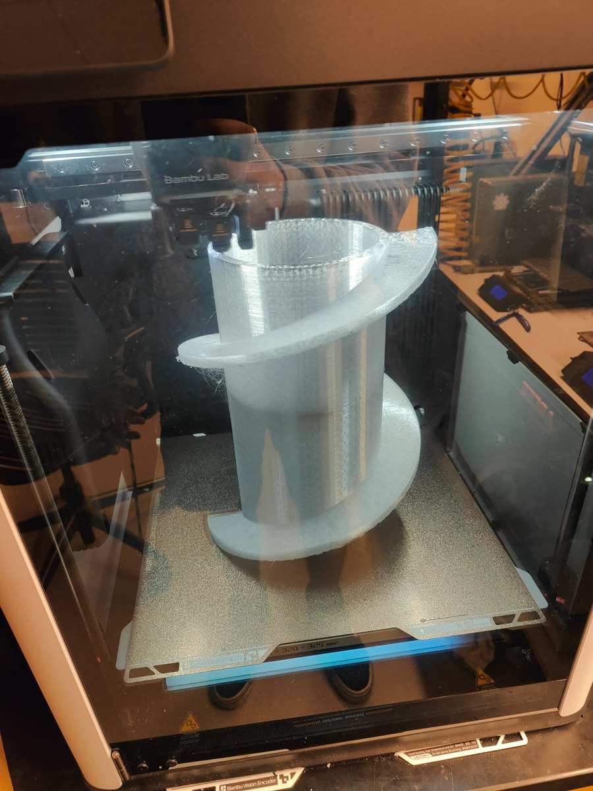

This project involved designing, building, testing, and competing with a lunar regolith-handling robot for a NASA robotics competition. The robot was developed to operate in a simulated lunar environment and complete tasks involving regolith simulant, mobility, mechanical design, system integration, controls, manufacturing, and operational performance.


Project Purpose
The purpose of the project was to design a robotic system capable of performing tasks related to lunar surface operations. These tasks required the team to consider how a robot could move through challenging terrain, interact with simulated lunar regolith, and complete mission objectives while meeting competition constraints.
This project connected directly to real-world space exploration challenges, including lunar construction, in-situ resource utilization, robotic mobility, excavation, regolith transport, and autonomous or semi-autonomous system development.
Competition Achievement
- Placed 10th in the Systems Engineering Paper.
- Placed 32nd overall in the competition.
- Developed a functional NASA competition robot as a first-year team.
- Applied systems engineering methods in a real engineering competition environment.
My Contributions
My work on this project included supporting the robot's controls system and assisting with the manufacturing of mechanical parts. On the controls side, I helped with the development and testing of robot control concepts needed to operate the system during competition. This involved understanding how the robot responded to commands, supporting troubleshooting, and helping connect the control approach to the larger robot design.
I also assisted with manufacturing parts for the robot, gaining hands-on experience with fabrication, assembly, design implementation, and the practical challenges of turning CAD models or mechanical concepts into physical components. This helped me better understand the relationship between design intent, manufacturability, assembly, and real-world performance.
Robot Design & System Development
The robot was designed as a multidisciplinary engineering system that required mechanical, electrical, software, controls, manufacturing, and systems engineering coordination. The team had to develop a robot that could perform reliably in a competition environment while meeting design constraints and task requirements.


Systems Engineering Process
A major part of this project was the use of systems engineering to guide the robot's development. Instead of only building a robot, the team had to define the problem, identify requirements, evaluate design options, test subsystem performance, manage risks, and document engineering decisions.
- Understand NASA competition requirements and constraints.
- Define robot objectives and break the robot into subsystems.
- Create design trade studies and identify technical risks.
- Plan testing and validation methods for subsystem performance.
- Connect controls, manufacturing, mechanical design, and testing to system goals.
- Write and submit the Systems Engineering Paper.
Technical Documentation
The Systems Engineering Paper was a major deliverable for the competition. It required the team to clearly explain the robot's design, development process, decision-making, testing approach, and competition readiness. Placing 10th in the paper showed that the team's documentation and engineering process were competitive, especially as a first-year team.

Skills Demonstrated


- Robotics design, controls support, and testing.
- Mechanical, electrical, and embedded systems integration.
- Manufacturing support, part assembly, and hands-on prototyping.
- Systems engineering, requirements development, and risk analysis.
- Technical writing, documentation, and team collaboration.
- Competition strategy, design iteration, and troubleshooting under real constraints.
Engineering Challenges
This project involved several engineering challenges. The robot needed to be designed for a difficult operating environment where mobility, regolith interaction, weight, reliability, controls, manufacturability, and competition constraints all mattered.
- Designing a robot that could move effectively through simulated lunar terrain.
- Developing a mechanism to interact with regolith simulant.
- Supporting robot controls and command response.
- Manufacturing and assembling parts for a functional competition robot.
- Managing mechanical, electrical, controls, and software integration.
- Balancing simplicity, reliability, and competition performance as a first-year team.
Project Significance
This project was significant because it provided hands-on experience with a real NASA engineering challenge. It required the team to move beyond classroom theory and apply engineering concepts to a physical robotic system with real constraints, deadlines, testing requirements, and competition scoring.
The project also helped build a stronger understanding of how robotics can support future lunar missions, especially in areas such as regolith movement, surface construction, excavation, and resource utilization.
What I Learned
Through this project, I gained experience in the full engineering design cycle, from concept development to competition testing. I learned how important systems engineering is when building a complex robot, especially when mechanical design, manufacturing, controls, electronics, and operations all need to work together.
The Systems Engineering Paper also strengthened my understanding of technical communication by requiring the team to explain not only what we built, but why design decisions were made and how those decisions connected to mission requirements.
Future Improvements
- Improve drivetrain performance and robot controls.
- Increase reliability of the regolith-handling mechanism.
- Reduce unnecessary weight and improve part durability.
- Improve electronics organization and sensor feedback.
- Add more advanced autonomous or semi-autonomous control.
- Perform more structured subsystem testing and expand documentation with more validation data.
Summary
The NASA Regolith Robotics Competition project was a hands-on robotics and systems engineering project focused on designing and building a robot for simulated lunar surface operations. As a first-year team, we placed 10th in the Systems Engineering Paper and 32nd overall, demonstrating strong technical documentation, design process, teamwork, and engineering potential. My contributions included supporting robot controls and assisting with the manufacturing of mechanical parts, giving me experience in both system operation and hands-on fabrication.